Subgoal Visualizations

- The graph is constructed in a latent representation space, but for visualization purposes, each node embedding is projected onto a 2D plane using approximate 2D coordinates (i.e., x-y position).
Existing offline hierarchical reinforcement learning (HRL) methods rely on high-level policy learning to generate subgoal sequences. However, their efficiency degrades as task horizons increase, and they lack effective strategies for stitching useful state transitions across different trajectories. We propose Graph-Assisted Stitching (GAS), a novel framework that formulates subgoal selection as a graph search problem rather than learning an explicit high-level policy. By embedding states into a Temporal Distance Representation (TDR) space, GAS clusters semantically similar states from different trajectories into unified graph nodes, enabling efficient transition stitching. A shortest-path algorithm is then applied to select subgoal sequences within the graph, while a low-level policy learns to reach the subgoals. To improve graph quality, we introduce the Temporal Efficiency (TE) metric, which filters out noisy or inefficient transition states, significantly enhancing task performance. GAS outperforms prior offline HRL methods across locomotion, navigation, and manipulation tasks. Notably, in the most stitching-critical task, it achieves a score of 88.3, dramatically surpassing the previous state-of-the-art score of 1.0. Our source code is available at: https://github.com/qortmdgh4141/GAS.
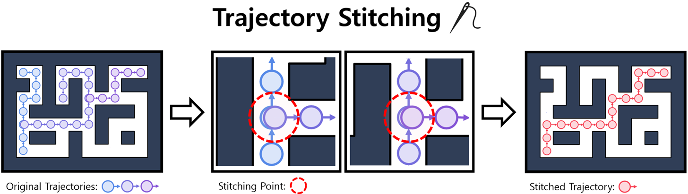
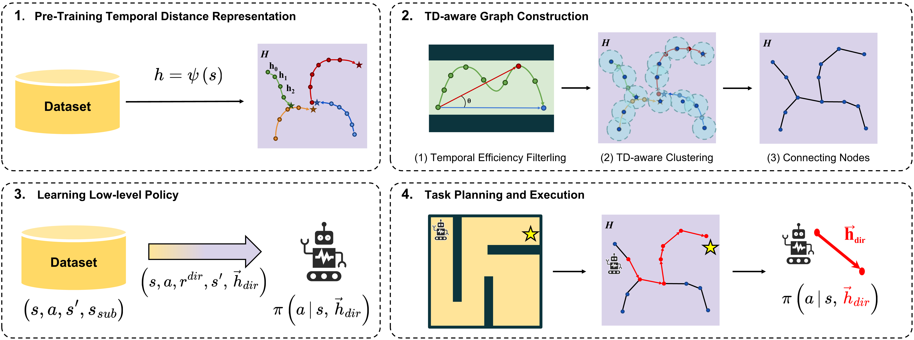
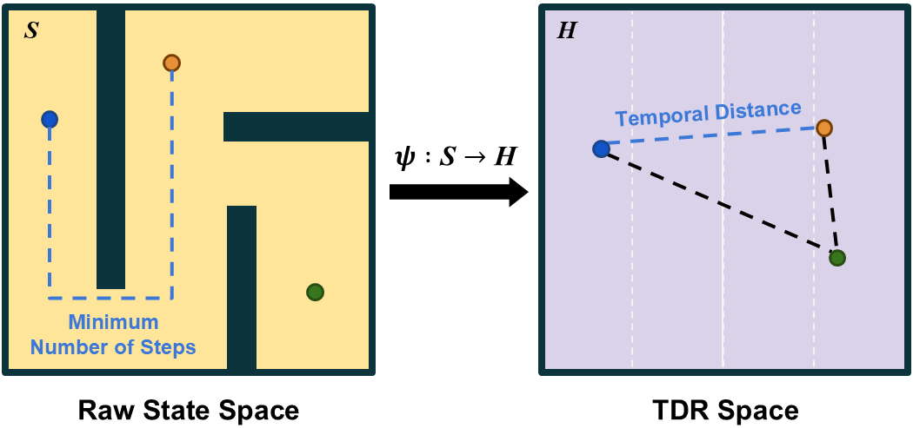
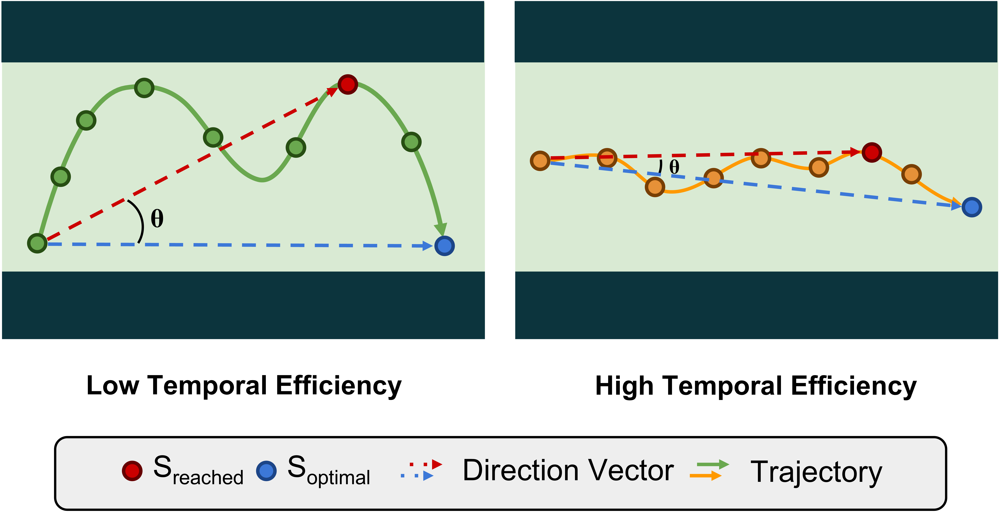
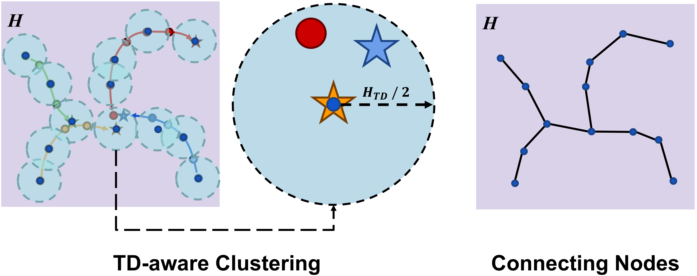
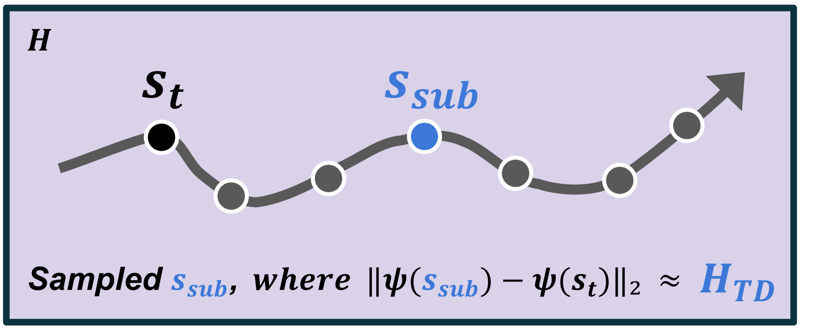
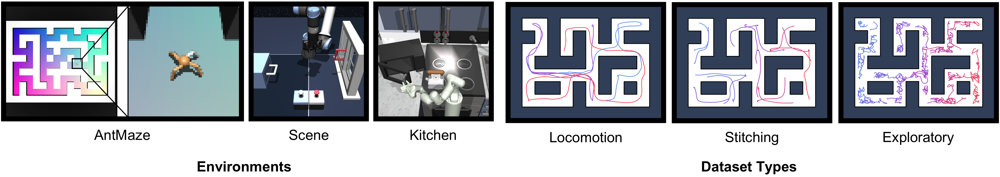
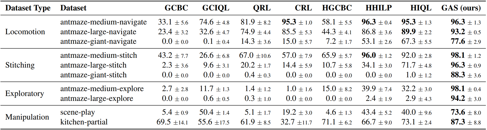
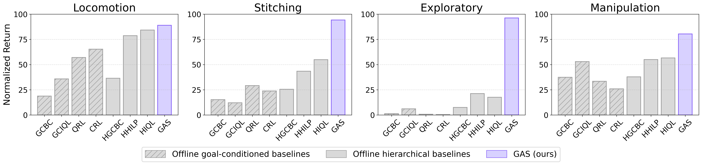
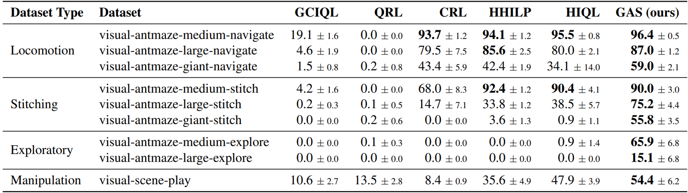
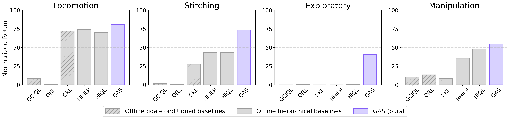
Q. Does GAS excel at long-horizon reasoning?
Yes, GAS shows strong performance on antmaze-giant-navigate and scene-play, which require substantial long-horizon reasoning capabilities in navigation and manipulation domains, respectively.
Q. Does GAS demonstrate effective stitching ability?
Yes, GAS consistently outperforms baselines on antmaze-{medium, large, giant}-stitch, where the datasets consist of short goal-reaching trajectories.
Q. Can GAS effectively learn from suboptimal datasets?
Yes, GAS achieves the best performance on antmaze-{medium, large}-explore, where the datasets consist of extremely low-quality data.
Q. Can GAS effectively handle image-based tasks?
Yes, GAS demonstrates strong performance not only in state-based environments but also in pixel-based environments.
@inproceedings{gas_baek2025,
title={Graph-Assisted Stitching for Offline Hierarchical Reinforcement Learning},
author={Seungho Baek and Taegeon Park and Jongchan Park and Seungjun Oh and Yusung Kim},
booktitle={International Conference on Machine Learning (ICML)},
year={2025},
}